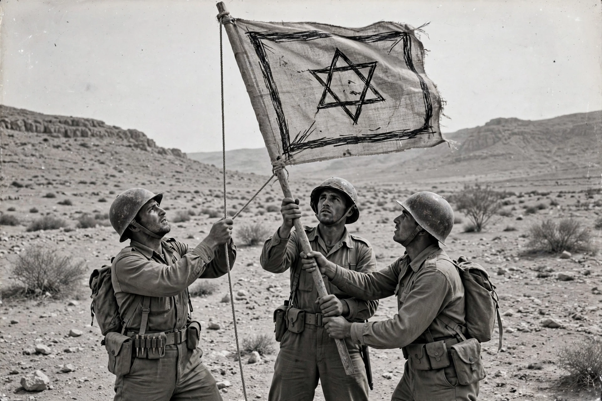

| 1948 Arab–Israeli War | |
|---|---|
 | |
| Date | 15 May 1948 – 10 March 1949 (truces from June 1948) |
| Location | Former British Mandate of Palestine; Sinai; southern Lebanon |
| Belligerents | Israel vs Egypt, Transjordan, Syria, Lebanon, Iraq and others |
| Result | Israeli victory; 1949 Armistice Agreements; Palestinian exodus (Nakba) |
The 1948 Arab–Israeli War, also known as the War of Independence in Israel and as part of the Nakba ("catastrophe") in Palestinian memory, was fought in the territory of Palestine under the British Mandate. It was the first war of the Israeli–Palestinian and Arab–Israeli conflicts. The war formally began on 15 May 1948, the day after Israel declared independence and the British Mandate expired, when the armies of Egypt, Transjordan, Syria, Lebanon and Iraq invaded.
The international phase followed a six-month civil war between Jewish and Arab forces in Mandatory Palestine that had begun after the United Nations adopted Resolution 181 (the Partition Plan) on 29 November 1947.
After initial Arab advances and heavy fighting in Jerusalem and elsewhere, UN-brokered truces in June and July 1948 allowed Israel to rearm — including with weapons from Czechoslovakia — and expand the Israel Defense Forces. Subsequent Israeli offensives (Operations Dani, Yoav, Hiram and Horev) secured the Galilee, the Negev, and corridors to Jerusalem. Israel took control of territory beyond the partition borders, ending the war in control of about 78 percent of the former Mandate.
The 1949 Armistice Agreements drew the "Green Line" boundaries: Egypt held the Gaza Strip, Transjordan annexed the West Bank including East Jerusalem, and Syria held a sliver of territory. More than 700,000 Palestinian Arabs fled or were expelled from their homes during the war and were not permitted to return, becoming refugees in neighbouring states; the event is commemorated by Palestinians as the Nakba. Some 6,000 Israeli Jews — about one percent of the Jewish population — were killed. No peace treaties followed, and the armistice lines held until the Six-Day War of 1967.